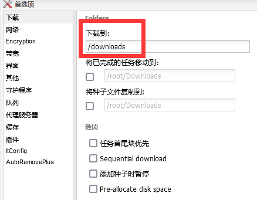
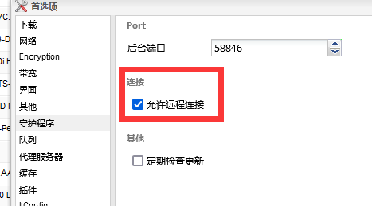
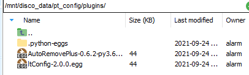
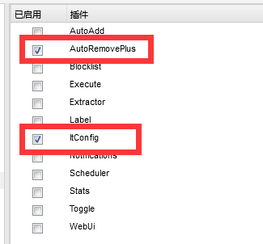
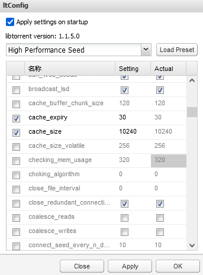
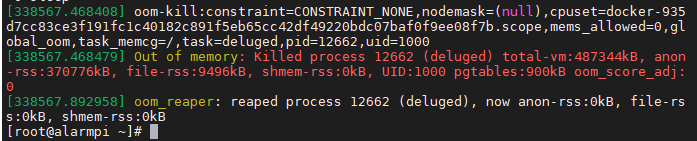
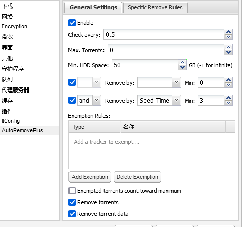
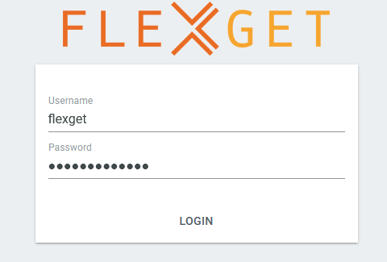
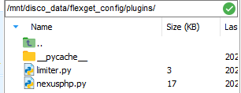
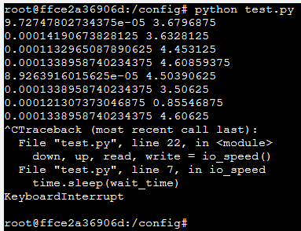

pt盒子配置记录
Glider 九月 27, 2021前言
之前发现墙上网口的带宽是千兆对等，心想岂不是可以用来刷pt？
于是开始研究pt圈子内部用的“盒子”配置
所谓“盒子/seedbox”，通常是指租的云服务器，具有以下特点
- 大带宽，通常是上g
- 有公网ip，并且大部分早被各大pt站标记为“盒子”
- 用于下载各种pt资源，特别是刚出的热种，刷上传量
通常的pt站点内，账号的上传量是最重要的，不仅可以用来提高分享率，还能够提高账户的等级，等级高到一定程度就不会因长时间不登录而删号，达到俗称的“毕业”
博主手头上有个4t的洋垃圾机械硬盘，还有一个之前做项目留下的树莓派4b（2g），便咸鱼了一个垃圾硬盘盒和几根千兆线，打算自建一个低配版的“盒子”
正文
树莓派4b的系统初始化和硬盘的挂载
这部分详见以前的文章
docker容器配置
本次盒子的配置采用deluge+flexget结合各种插件完成全自动刷上传的功能
以下所有操作，大硬盘均挂载于/mnt/disco_data下，仅供参考
deluge
先上docker配置：
docker run -d \
--name=deluge \
-e PUID=1000 \
-e PGID=1000 \
-e TZ=Asia/Shanghai \
-e DELUGE_LOGLEVEL=error `#optional` \
--net=host \
-v /mnt/disco_data/pt_config:/config \
-v /mnt/disco_data/pt_download:/downloads \
--restart unless-stopped \
ghcr.io/linuxserver/deluge
进去后默认密码是deluge
修改默认下载目录：
打开deamon连接端口，接下来flexget会用这个进行交互
接着再在/mnt/disco_data/pt_config中新建plugins文件夹，把插件放进去 
插件项目地址：
autoremove这个插件好久没更新了，有老哥做了新版适配，并且给出了docker中的使用方法，这里是原讨论链接，所以下下来之后记得按照这个法子重命名一下
放好插件之后重启一下deluge容器，再进去应该就能看到插件了 
ltconfig配置
ltconfig插件是用来优化上传速度的，如果是正常的大内存机器，可以直接使用（high performance seed）模式，由于博主只有个丐版树莓派，所以需要调教一下
个人感觉最重要的就两项：cache_expiry和cache_size
我的设置如下：
如果设置太大了，比如这个博客,容易爆内存，导致deluge容器被杀掉，虽然docker会帮你自动重启，但这样又得重新开始链接，比较慢。
此时内核报错如下：dmesg

我还找到了一份专门给树莓派4b用的配置文件链接
这份比较稳，适合当稳定的流媒体服务器使用，而我则是用来刷pt的，当然就应该在进程崩溃边缘反复横跳啦！
autoremove配置
我的配置： 
解释：下完后，做种3天（防止hr，opencd，说的就是你！）
flexget
docker配置：
docker run -d \
--name=flexget \
-p 5050:5050 \
-v /mnt/disco_data/flexget_data:/data \
-v /mnt/disco_data/flexget_config:/config \
-e FG_WEBUI_PASSWD=AdminimdA? \
-e FG_LOG_LEVEL=info \
-e FG_LOG_FILE=flexget.log \
-e PUID=1000 \
-e PGID=1000 \
-e TZ=Asia/Shanghai \
wiserain/flexget
FG_WEBUI_PASSWD这个设置你自己的密码，注意flexget默认需要很高强度的密码，如果启动失败，建议看一下启动的log，说不定就是说你的密码太弱了，不让启动……
启动完成之后，进入5050端口的网页，输入密码 
成功之后，开始配置flexget的插件
同样在/mnt/disco_data/flexget_config中新建plugins文件夹，把插件放进去

插件地址：
- flexget-nexusphp 用于高级过滤（免费，2x这种）
- flexget-limiter 用于限制种子下载，在硬盘或者带宽顶不住的时候，停止rss订阅
flexget整体配置
因为插件加载后，全都在config中进行配置，这里我把自己的配置放出来，供读者借鉴，同时做个备份
web_server:
bind: 0.0.0.0
port: 5050
web_ui: yes
templates:
de:
limit_new: 1
limiter:
wait: 10
disk:
write: 10240 # disk write speed KB/s
content_size:
min: 0
max: 40960 #种子最大体积是40g
strict: no
deluge:
host: 192.168.123.60 #填deluge的地址
port: 58846
username: localclient
password: e3006f0f722e52949c1975c9b8a04c2874aa2a16 #这个看下面的解释
path: /downloads
tasks:
hdsky-task:
rss:
url: https://hdsky.me/torrentrss.php?rows=10&linktype=dl&passkey=xxxxxxxxxxxxxxxxxxxxxxxxxx
other_fields:
- link
nexusphp:
cookie: 'c_secure_uid=xxxxxxxxxxxxxxxxxxxxxxxxxxxxxx'
discount:
- free
- 2xfree
seeders:
min: 1
max: 3
leechers:
min: 5
max_complete: 0.2
user-agent: Mozilla/5.0 (Windows NT 10.0; Win64; x64; rv:92.0) Gecko/20100101 Firefox/92.0
template: de
ptertask:
rss:
url: https://pterclub.com/torrentrss.php?rows=10&linktype=dl&passkey=xxxxxxxxxxxxxxxxxxxxxxxx
other_fields:
- link
nexusphp:
cookie: 'c_secure_uid=xxxxxxxxxxxxxxxxxxxxx'
discount:
- free
- 2xfree
seeders:
min: 1
max: 3
leechers:
min: 5
max_complete: 0.1
user-agent: Mozilla/5.0 (Windows NT 10.0; Win64; x64; rv:92.0) Gecko/20100101 Firefox/92.0
template: de
schedules:
- tasks: hdsky-task
interval:
minutes: 10
- tasks: ptertask
interval:
minutes: 10
deluge那里的密码在"/mnt/disco_data/pt_config/auth"这个文件里面
[root@alarmpi ~]# cat "/mnt/disco_data/pt_config/auth"
localclient:e3006f0f722e52949c1975c9b8a04c2874aa2a16:10
那么密码就是e3006f0f722e52949c1975c9b8a04c2874aa2a16
limiter配置选择硬盘写入作为判断，因为flexget和deluge处于不同的容器，网口不一样，flexget中读不到deluge的真实下载速度。我在flexget容器中写了个脚本，观测网络速度和硬盘写入速度，结果如下（单位都是M/s）：

明显有数量级的差距，只能用硬盘写入来判断了。
QA
deluge可能有时web页面登录不上去了，总显示密码错误。这时候试一下密码为空，说不定就能进了。
触发原因：更新deluge配置时，火狐浏览器自动把空密码填到修改密码那一栏去了……然后就把密码改成了空
结尾
之前用过qbit、tr，结合好多其他的方式配置盒子，甚至自己写过爬虫，尝试过滤出免费种。
后来网上冲浪时发现早有大手子写过了，果然还是不要造轮子的好。
flexget很早之前就听过，但一直嫌麻烦，最近闲下来了摸一摸，没想到一天就摸出来个大概，比想象中的简单多了，真香
所以不要小看脚本小子啊！有脚本小子当然也有脚本老子，只要能达成目标，就是大手子！